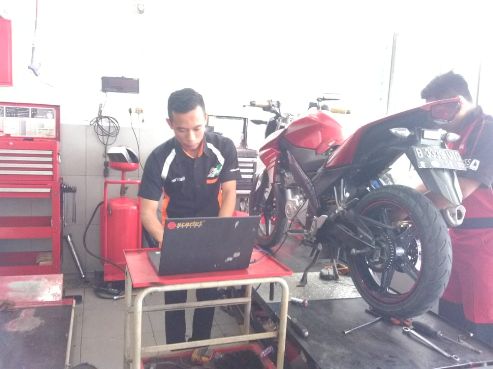

Teknik Sepeda Motor
Teknik Sepeda Motor merupakan salah satu program keahlian di SMK Negeri 1 Kutasari dengan izin operasional dari Dinas Pendidikan Kabupaten Purbalingga No.421.5/4405/2012. Program keahlian Teknik Sepeda Motor memiliki Akreditasi A.

Kegiatan praktik peserta didik Kompetensi Keahlian Teknik Sepeda Motor.
Visi
Menjadi program keahlian yang unggul, kreatif, produktif dan inovatif.
Visi
Menghasilkan lulusan tenaga teknisi mekanik sepeda motor yang terampil, disiplin, tanggung jawab, dan berakhlak mulia yang sesuai dengan tuntutan dunia usaha/dunia industri khususnya dalam bidang mekanika sepeda motor.
Misi
Mendidik siswa dalam bidang mekanika khususnya keahlian sepeda motor agar dapat bekerja dengan baik dan mandiri.
Mendidik siswa agar mampu memilih karier, berkompetensi, dan mengembangkan sikap professional.
Tujuan TSM
Menghasilkan lulusan peserta didik untuk menjadi tenaga mekanik dalam bidang sepeda motor yang terampil, disiplin, tanggung jawab, dan berakhlak mulia sesuai tuntutan dunia usaha dan dunia industri.
Mendidik peserta didik agar dapat menerapkan hidup sehat, memiliki wawasan, pengetahuan, dan kedisiplinan.
Mendidik peserta didik dengan keahlian dan keterampilan dalam bidang teknologi khususnya mekanika sepeda motor agar dapat bekerja secara mandiri maupun mengisi lowongan pekerjaan di dunia usaha dan dunia industri.
Mendidik peserta didik agar mampu memilih karier, berkompetensi, dan mengembangkan sikap professional dalam bidang mekanika khususnya sepeda motor.
Membekali peserta didik dengan ilmu pengetahuan dan keterampilan sebagai bekal bagi yang berminat melanjutkan pendidikan.
Teknik Sepeda Motor
Program keahlian TSM membekali peserta didik dengan pengetahuan dan keterampilan dalam bidang mekanika sepeda motor. Peserta didik diarahkan agar memiliki kemampuan yang sesuai dengan kebutuhan dunia usaha dan dunia industri.
TSM
Kompetensi Keahlian
Kompetensi Lulusan
Kemampuan Dasar
Memiliki kemampuan dasar dalam bidang keahlian tertentu sesuai dengan kebutuhan dunia kerja.
Kemampuan Spesifik
Memiliki kemampuan spesifik dalam program keahlian sesuai dengan kebutuhan dunia kerja dan menerapkan kemampuan sesuai prosedur atau kaidah di bawah pengawasan.
Pengalaman Keahlian
Memiliki pengalaman dalam menerapkan keahlian spesifik yang relevan dengan dunia kerja.
Keselamatan Kerja
Memiliki kemampuan menjalankan tugas keahlian dengan menerapkan prinsip keselamatan, kesehatan, dan keamanan lingkungan.